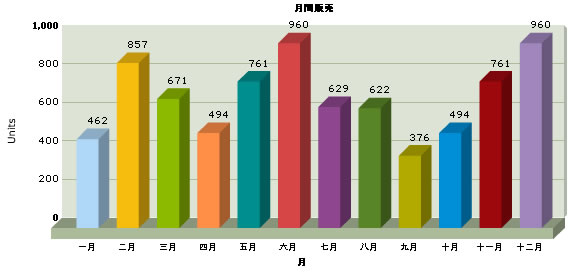
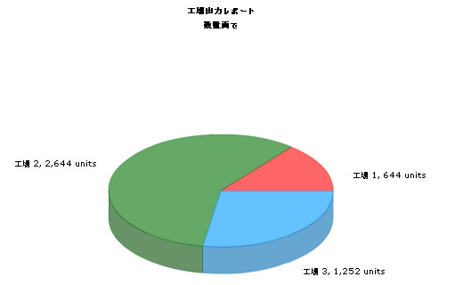

Using FusionCharts with PHP > Basic Examples |
FusionCharts can effectively be used with PHP to plot dynamic data-driven charts. In this section, we'll show a few basic examples to help you get started. We'll cover the following examples here:
Let's quickly see each of them. Before you proceed with the contents in this page, we strictly recommend you to please go through the section "How FusionCharts works?" and "Plotting from Database Example", as we'll directly use a lot of concepts defined in those sections. All code discussed here is present in Download Package > Code > PHP > UTF8Example folder. |
| Plotting a chart from data contained in JapaneseData.xml |
While using FusionCharts with UTF-8 characters, please remember the following:
In our code, we've used the charts contained in Download Package > Code > FusionCharts folder. When you run your samples, you need to make sure that the SWF files are in proper location. Also the JapaneseData.xml file used in JapaneseXMLFileExample.php is present in the Download Package > Code > PHP > UTF8Example > Data folder. Let's now get to building our first example. In this example, we'll create a "Monthly Unit Sales" chart using dataURL method. For a start, we'll hard code our XML data in a physical XML document JapaneseData.xml and then utilize it in our chart contained in an PHP Page (JapaneseXMLFileExample.php). Let's first have a look at the XML Data document: <?xml version="1.0" encoding="UTF-8" ?> The XML document should begin with an XML declaration which specifies the version of XML being used and the encoding as seen in the above xml: As you would notice, the caption, x-axisname and names of the months in the xml are in Japanese. The xml tags itself are same as the ones seen in BasicExample. The php which uses this xml is JapaneseXMLFileExample.php which contains the following code: <?php This code is similar to the code present in BasicExample/SimpleChart.php. As you would notice, there is nothing specific to be done in the Chart container page to ensure UTF-8 output. As a practice, you could have the <meta> tag in the head section of the html with the charset defined as UTF-8 as shown below. That's the only effort involved in rendering a chart with UTF8 characters with data from a xml file. The chart with Japanese text will look as shown:  Let' move on to our next example where we get the data from the database and dynamically create the xml. Plotting a chart with Japanese text from the database Let us now create a chart with UTF characters present in the database. For this we will modify the database and add a table to contain the Japanese data. Database Configuration
Let's now shift our attention to the code that will interact with the database, fetch data and then render a chart. We will create two php files - JapaneseDBExample.php and PieDataJapanese.php for this example. JapaneseDBExample.php will act as the chart container and PieDataJapanese.php will be the xml data provider. The code contained in JapaneseDBExample.php is as follows: <?php In the above Chart container page, as far as UTF-8 specific changes is concerned, only the <meta> tag in the head section of the html with the charset defined as UTF-8 as shown below: Let's move on to PieDataJapanese.php which contains the code to connect to the database and retrieve data. Here is the code present in PieDataJapanese.php: <?php This code is similar to PieData.php seen in DBExample with dataURL method. There are some UTF-8 specific points to be noted here.
Try not to put any empty lines or spaces in the output xml. When connecting to the database, the following query should be executed, before running query to get data in UTF8: mysql_query ( "SET NAMES 'UTF8'" ); This will inform mysql that all incoming data are UTF-8, it will convert them into table/column encoding. Same will happen when mysql sends you the data back - they will be converted into UTF-8. You will also have to assure that you set the content-type response header to indicate the UTF-8 encoding of the page as shown: header('Content-type: text/xml;charset=UTF-8'); When we view the chart in the browser, it would look as under:
 In Download Package > Code > PHP > UTF8Example, we've more example codes for French language too, which have not been explained here, as they're similar in concept. You can directly see the code and get more insight into it. |